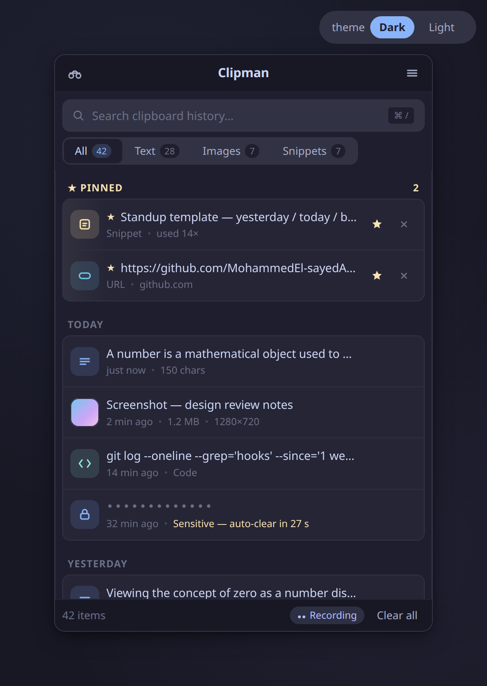
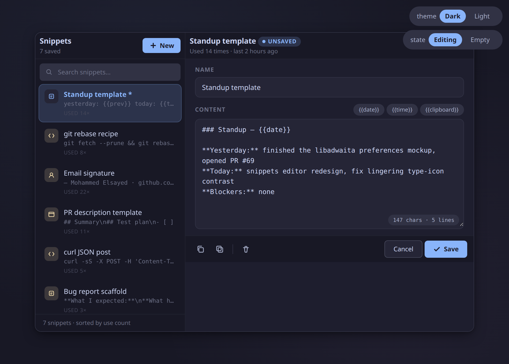
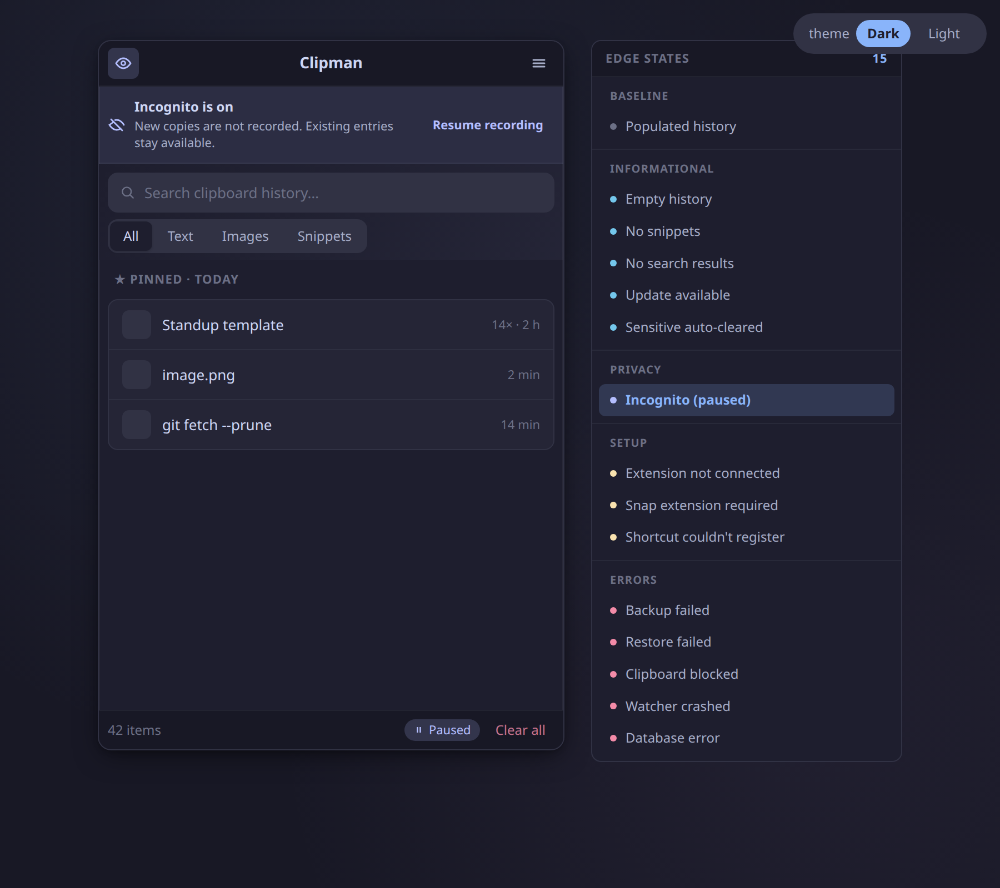
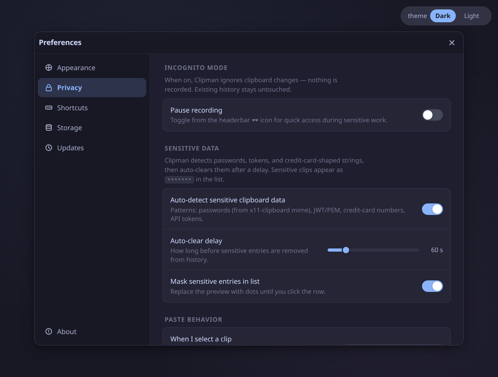
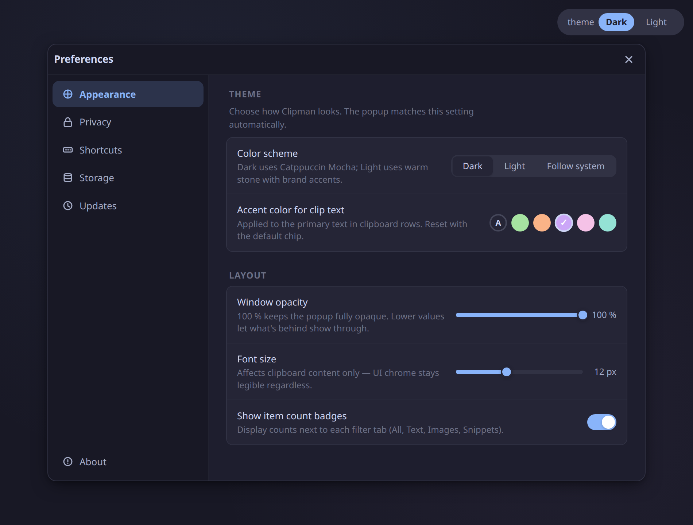
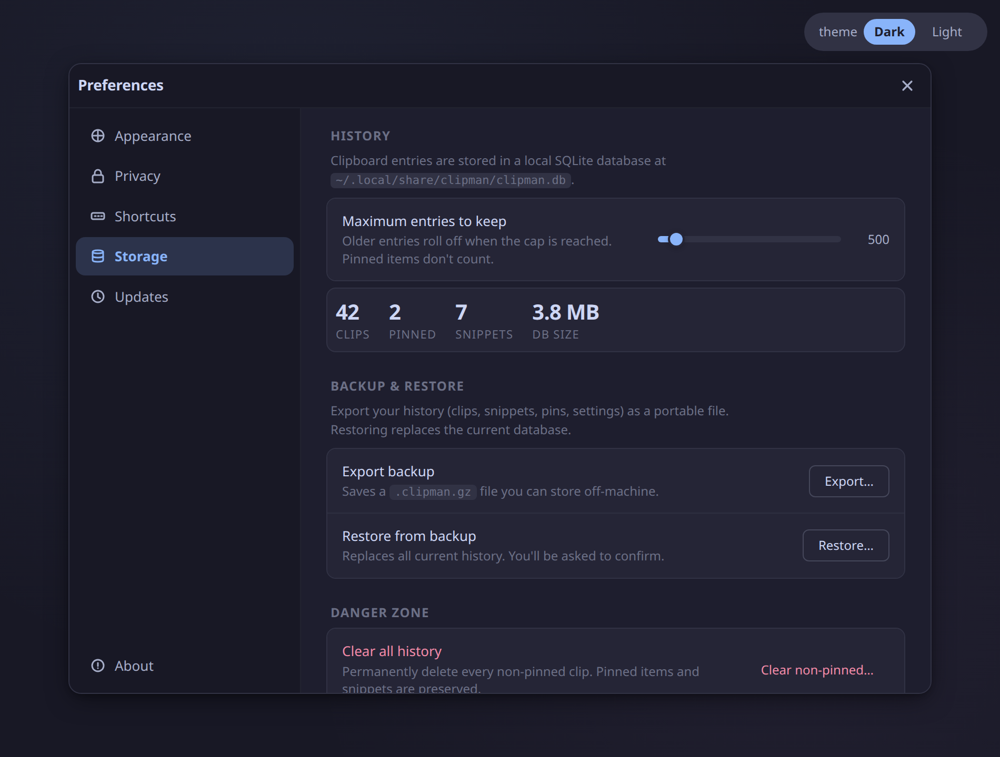

Wayland-native clipboard history
Clip once.
Paste forever.
Clipman is a fast, GTK-native clipboard history manager for Ubuntu and GNOME on Wayland — with search, pinning, snippets, and a privacy mode that actually pauses recording.
- Snap Store38 territories
- Ext #9407GNOME Shell extension
- clipman-clipboardPyPI · AUR
- 100%Wayland-native

Live preview
Clipboard history shouldn't be a leap of faith.
This is the redesigned main popup, embedded right here. Flip through real states — full history, empty, no-results, incognito paused — without installing anything.
By the numbers
Already running across 38 territories. On every channel that matters.
Live counts pulled straight from GitHub, the GNOME Extensions registry, and PyPI on page load. No analytics, no dashboards — just the public numbers anyone can verify.
What it actually does
Four habits, one keystroke.
The thing you copied yesterday is one keystroke away.
Super+V opens the popup. Type to full-text search across text and images. Pin what you reuse. Save snippets with templates. Filter tabs split All, Text, Images, and Snippets.

Your passwords leave on their own.
Incognito mode pauses recording entirely. Passwords, tokens, and card-shaped strings auto-clear after 30 seconds. The history file ships with restrictive permissions (0600) by default.

No polling. No subprocesses. No flicker.
A GNOME Shell extension forwards clipboard events over D-Bus, so the daemon wakes only when you copy. wl-clipboard handles KDE, Sway, and Hyprland the same way — event-driven, no busy-loop.

Looks like the rest of your desktop, on purpose.
Catppuccin Mocha for dark, stone for light. Six accent presets, opacity 30–100 %, font size 8–20 px. Built on GTK and libadwaita with a single design-token system so the theme behaves identically on every surface.

Sixteen polished states for the moments that matter.
Empty history, no-results, incognito paused, sensitive auto-cleared, first-run, extension missing, backup failed — every edge is intentional and consistent across the app, with a tone that never shouts.

Get Clipman
One command. Then Super+V.
Snap is the easiest on Ubuntu/GNOME. PyPI works on any distro with Python 3.10+. Arch users get a maintained AUR package. The .deb and .rpm builds ride the GitHub Releases page.
sudo snap install clipman
Log out and back in once to activate the GNOME Shell extension, then press Super+V. · snapcraft.io/clipman
FAQ